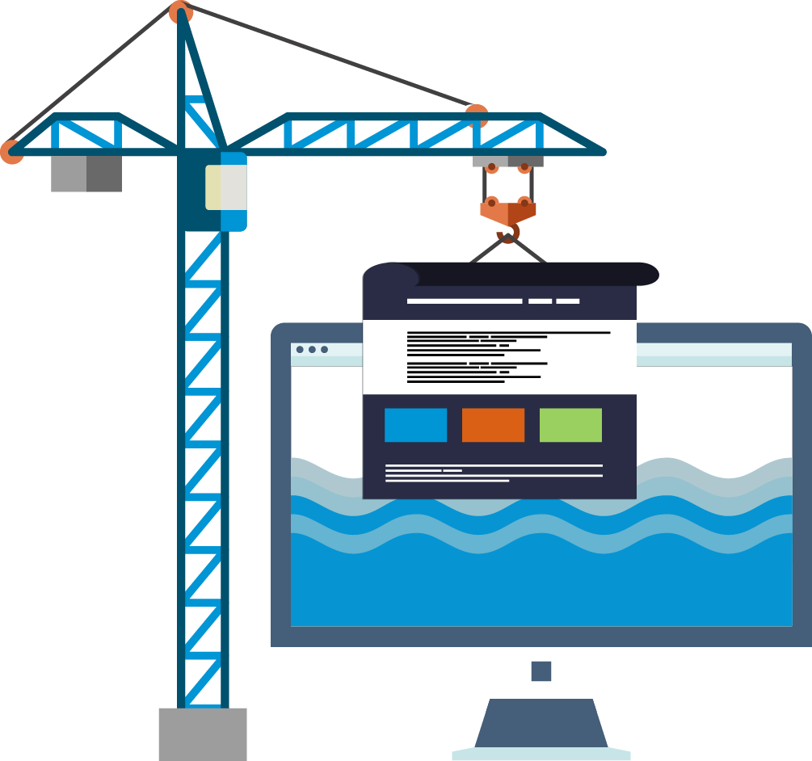

- 
Web designer & developer
Web design encompasses many distinct skills & disciplines in the production & maintenance of websites. These areas include, web graphic design, interface design, authoring, standardised code, proprietary software, UX/UI design, wireframing, security, & SEO. The web designers & developers are expected to be aware of web accessibility guidelines in order to make sure their end products adheres to each & every user that intends or requires to use them. Similar to software field, the web design & development industry has also became a binary, meaning either you are 0 or 1, dead or alive, respectively. The reason being, there is an exodus of the number of new technologies being born each single day. The tool one tend to use today may very well become obsolete by tomorrow. Click the link below to view my projects.
- More info